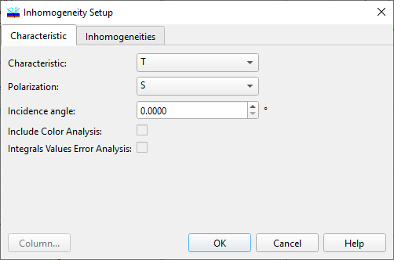

Inhomogeneity/Interlayers Characteristics
Inhomogeneity/Interlayers Characteristic
Navigation: OptiLayer Menu Commands > Analysis Menu > Inhomogeneities/Interlayers >
Inhomogeneity/Interlayers Characteristic
` <inhomogeneities_interlayers.html>`__ ` <inhomogeneities_interlayers.html>`__ ` <inhomogeneity_interlayers.html>`__
When this command is invoked, the Inhomogeneity/Interlayers Setup dialog window appears on the screen.
The Characteristic page of this dialog window allows you to specify spectral characteristics for the Inhomogeneities/Interlayers analysis. It is necessary to specify the Characteristic and Polarization. The incident angle or Wavelength should be specified depending on the Spectral/Angular mode setting.
Additionally, it is possible to select the Interlayer Thickness Units independently of the general settings for Length units.

The way in which the refractive index of interlayers is computed is controlled by the selection of the Refractive Index Calculation setting.
It is possible to include Color Analysis in order to evaluate changes in color characteristics due to Inhomogeneities/Interlayers. If this option is selected, an additional Color Inhomogeneities/Interlayers Evaluation window will be opened.
It is also possible to include Integrals and Values in order to evaluate changes in any characteristics specified in the Integral, Values window due to Inhomogeneities/Interlayers. If this option is selected, an additional Integrals, Values Inhomogeneities/Interlayers Evaluation window will be opened.
The OK button accepts the specified data and starts the Inhomogeneities/Interlayers Analysis procedure. Its results are displayed in the Inhomogeneities/Interlayers Evaluation window. The Apply button performs the same operation but without closing the Inhomogeneity/Interlayers Setup window.
See also: